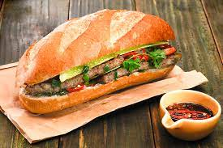

쇠고기나 닭고기로 낸 고기 국물에 넓적한 쌀국수를 말아먹는 베트남의 요리. 쇠고기가 들어간 것은 '퍼 보', 닭고기가 들어간 것은 '퍼 가'로 구분한다.
보통 다양한 소고기 종류(미트볼 계열도 들어간다)가 든 고기 국수와 소스, 그리고 생 숙주나물, 고수 등이 나오는데, 숙주나물은 국물에 넣어서 익혀먹는다. 처음엔 향신료 특유의 강한 향 때문에 거부감이 들 수도 있겠지만 먹다보면 중독성이 강하다. 특히 한 번 맛을 들이면 숙취 해소용으로 찾게 된다. 숙주나물이 듬뿍 들어간 뜨끈한 고기국물이니 해장에 제격이다.
현지 식당에서는 베트남산 핫소스와 함께 굴소스 혹은 피시소스, 마늘식초, 칠리 사테소스, 라임 등등을 넣어먹으라고 주는데 취향에 맞게 넣어먹으면 매우 깊은 고기 육수에 신맛, 매운맛, 단맛 등 다양한 풍미를 더해 먹을 수 있다.
반미

베트남이 프랑스의 식민지배를 받으면서 서양의 식문화가 유입되어 형성된 음식이다. 속재료에는 유럽에서는 접하기 어려운 것들이 들어간다. 향신료를 묻히거나 향신료에 재워 맛을 입힌 후 구운 돼지고기 혹은 새우완자에 당근, 쪽파 등 각종 채소 등의 속재료를 빵 사이로 넣고 속재료 위에 매운 간장이나 느억맘 등의 소스를 쳐서 먹는다. 채소는 고수, 고추, 당근, 무 등이 들어가는데 특히 고추가 꽤나 매워서 평범한 샌드위치인 줄 알고 주문했다가 매운맛에 데이는 사람들도 있다. 고수나 고추 등은 싫어하면 빼 달라고 하면 된다.
바게트가 딱딱해서 먹기 힘들다고 생각할 수 있는데 사실 한국에서 접하는 반미는 대부분 유럽식 바게트 완제품을 써서 만들기 때문에 생기는 오해다. 현지에서 먹어 보면 유럽식 바게트보다 부드럽고 겉면도 바삭하지만 쉽게 뜯어진다. 이유는 베트남식 바게트에는 쌀가루가 들어가기 때문이라고 한다.
반쎄오
베트남 반쎄오라는 이름은 어디에서 왔습니까? 왜 그렇게 특별한 방법으로 불렸습니까? 말할 필요도 없이 많은 사람들이 놀라고 있습니다. 베트남 반쎄오를 부을 때 나는 소리에서 유래하기 때문에 반죽을 팬에 부을 때 "쎄오" 소리가 납니다. 그 이후로 사람들은 이 요리를 베트남 반쎄오라고 불렀습니다.
많은 사람들이 "중부의 베트남 반쎄오는 빈딘 (Binh Dinh)성에서 왔습니다. 그리고 남부의 베트남 반쎄오는 크메르에서 왔다고 말합니다. 그러나 베트남 반쎄오의 첫 번째 원산지가 어디인지 확인하는 공식 발표는 아직 없습니다. 베트남의 거의 모든 지역에 베트남 반쎄오가 있기 때문입니다. 그러나 오늘날 베트남 반쎄오는 작은 베트남 반쎄오와 중부 지역에서 인기 있는 두 가지 유형으로 나뉩니다. 다른 유형은 남부의 많은 사람들에게 사랑받는 큰 베트남 반쎄오입니다.